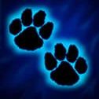
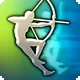
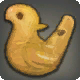
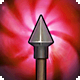
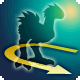
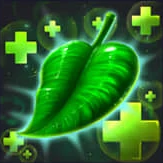
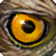
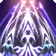
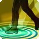
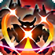

Compagnon animal
 Spécialisation
Spécialisation
Les Vagabonds sont accompagnés en permanence par un compagnon animal. Choisissez un loup ou un faucon ; cet animal accompagne le Vagabond au début de leur aventure. Les capacités du compagnon sont déterminées par son tableau à la fin de la présentation du Vagabond, et son niveau est égal à celui du Vagabond. Ses statistiques, y compris les points de vie maximum, sont les mêmes que celles du Vagabond, bien qu'il ait sa propre réserve de points de vie et subisse des dégâts séparément du Vagabond. Son modificateur de caractéristique pour les attaques est la Dextérité. Le compagnon animal partage l'initiative avec le Vagabond, partage les PA du Vagabond et obéit aux commandes du Vagabond autant qu'il le peut. Si le compagnon animal meurt, le Vagabond peut passer 8 heures dans la nature à la recherche et à l'apprivoisement d'un compagnon animal du même type.

Tir de pistage
 1 PA (Action Bonus)
1 PA (Action Bonus)
En imbibant ses munitions avec un traceur puissant, le Vagabond aide son partenaire à suivre un ennemi. Effectuez un jet de précision. En cas de touché ou d'effleurement, le compagnon du Vagabond gagne un bonus de +2 en précision contre cette cible jusqu'à la fin du prochain tour du Vagabond.
 Achèvement
Achèvement
 1 PA (Réaction)
1 PA (Réaction)
Lorsqu'une créature amicale à moins de 30 mètres touche une autre créature avec une attaque, et que cette attaque laisse la cible ensanglantée, le Vagabond peut utiliser sa réaction pour attaquer la créature touchée.

Sifflet pour compagnon
 2 PA (Action)
2 PA (Action)
Avec un sifflet strident, le Vagabond active une manœuvre d'équipe en tant qu’action. Le Vagabond peut immédiatement utiliser une action bonus ou une action combo (sous réserve que les conditions soient remplies), et son compagnon animal effectue une action. Le Sifflet pour compagnon peut être utilisé un nombre de fois par repos long égal au modificateur de Sagesse du Vagabond (minimum 1).

Flèche ciblée
 1 PA (Action Combo)
1 PA (Action Combo)
Lorsque le Vagabond touche une créature avec une attaque, il peut soustraire 1 de Défense à cette créature pendant 3 rounds avec une action combo.

Patrouille animale
 Passif
Passif
Le compagnon animal du Vagabond reste alerte au danger même lorsqu'il dort ou qu'il est occupé par une autre activité pendant un long ou repos court. Ni le Vagabond ni son compagnon animal ne peuvent être surpris au début du combat tant que l'un d'eux peut à la fois voir et entendre normalement.

Brossage
Passif
À la fin de chaque tour de combat, le compagnon animal du Vagabond récupère un montant de points de vie pouvant aller jusqu'à son modificateur de Constitution.

Œil aiguisé
1 PA (Action Bonus)
Le Vagabond a l'avantage sur les tests d'Intelligence (Nature) pour identifier et se rappeler d'informations sur la flore. De plus, il peut utiliser une action bonus pour identifier jusqu'à une faiblesse et une résistance d'une créature qu'il peut voir.

Flèche élémentaire
1 PA (Action Bonus)
Le Vagabond peut dépenser une action bonus pour désigner le feu, la foudre ou la glace. Pendant 4 rounds, le type de dégât de toutes les attaques d'arme du Vagabond passe à cet élément.

Pas prudent
Passif
Le terrain difficile n'entrave pas le mouvement du Vagabond ou de son compagnon animal. Le Vagabond et son compagnon animal ne perdent pas la moitié de leur mouvement en se relevant de la position couchée et subissent la moitié des dégâts d'une chute. Si les dégâts finaux causés par la chute sont inférieurs à 10, ils sont annulés.

Chasseur de gros gibier
Passif
Le Vagabond et son compagnon animal connaissent l'emplacement des créatures de taille grande ou supérieure dans un rayon de 30 mètres, même lorsque cette créature est invisible. Le Vagabond et son compagnon animal peuvent ajouter une valeur égale à leur modificateur de Sagesse à tous les jets de sauvegarde contre les effets causés par des créatures de taille grande ou supérieure.
 Tir étourdissant
1 PA (Action Combo)
Tir étourdissant
1 PA (Action Combo)
Lorsque le Vagabond réussit un coup critique sur une créature, il peut utiliser une action combo pour ordonner à son compagnon animal de se déplacer jusqu'à 4.5 mètres et d'attaquer la créature touchée si elle est à portée. La cible effectue un jet de sauvegarde de Constitution ; en cas d'échec, elle subit 1d6 de dégâts (perforants si le loup a attaqué, et tranchants si le faucon a attaqué) et est étourdie jusqu'à la fin de son prochain tour.
Âme bestiale
2 PA (Action)
Au vingtième niveau, le Vagabond et son compagnon animal ont forgé un lien si fort qu'ils peuvent temporairement partager une âme. Le Vagabond peut utiliser une action pour activer Âme bestiale pendant 4 rounds. Le Vagabond prend une forme demi-bestiale du même type que son compagnon animal, acquérant toutes les caractéristiques et capacités de son compagnon animal ainsi que ses caractéristiques et capacités habituelles de Vagabond. Ses points de vie sont égaux à la somme des deux créatures, et le Sifflet pour compagnon permet au Vagabond d'effectuer une action complète tout en étant actif. Lorsqu'Âme bestiale cesse, le compagnon animal apparaît dans un espace adjacent au Vagabond, et les points de vie des deux créatures sont réduits de moitié par rapport à la valeur actuelle de la forme combinée. Si ce nombre est supérieur à leurs points de vie maximum, ils gagnent des points de vie temporaires égaux à l'excédent. Si des afflictions ont affecté la forme combinée, le Vagabond peut choisir lui-même ou son compagnon animal pour continuer à souffrir de cette condition ; tout bonus ou malus continue d'affecter les deux.
 Détails de la classe
Détails de la classe
 Points de vie : 1d6 + modificateur de Constitution par niveau de Vagabond
Points de vie : 1d6 + modificateur de Constitution par niveau de Vagabond Dés de vie : 1d6 par niveau de Vagabond
Dés de vie : 1d6 par niveau de Vagabond DD des jets de sauvegarde : 8 + bonus de maîtrise + modificateur de Dextérité
DD des jets de sauvegarde : 8 + bonus de maîtrise + modificateur de Dextérité Maîtrises : Arcs, Armes à feu ; Armures légères
Maîtrises : Arcs, Armes à feu ; Armures légères Jets de sauvegarde : Dextérité, Constitution
Jets de sauvegarde : Dextérité, Constitution Compétences : Choisissez 3 parmi Acrobatie, Investigation, Nature, Dressage, Médecine, Intuition, Survie, Discrétion, Représentation et Perception
Compétences : Choisissez 3 parmi Acrobatie, Investigation, Nature, Dressage, Médecine, Intuition, Survie, Discrétion, Représentation et Perception Équipement de départ : Une arme maîtrisée, une armure légère, a) un gant de fauconnerie et 5 friandises pour oiseaux ou b) un collier, une laisse et 5 friandises pour loup, un couteau de survie, un sac d'explorateur
Équipement de départ : Une arme maîtrisée, une armure légère, a) un gant de fauconnerie et 5 friandises pour oiseaux ou b) un collier, une laisse et 5 friandises pour loup, un couteau de survie, un sac d'explorateur